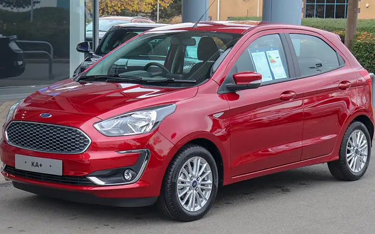

Par Motor › Precios por modelo › Ford Ka y Ka+
Precio de segunda mano · noviembre de 2026¿Cuánto vale un Ford Ka y Ka+ de segunda mano?

Precio justo estimado de un Ford Ka y Ka+ usado en España, año por año, con los kilómetros normales para su edad y en buen estado: de 1.500 € a 7.600 €. Para tasar el tuyo con sus kilómetros reales y su estado, usa el tasador gratis.
Precios del Ford Ka y Ka+ por año
Ka I (1996–2008)
Precio de nuevo: 1.3 60 CV, 8.500 € · 1.3 70 CV, 9.000 € · SportKa 1.6 95 CV, 11.500 €
| Año | Km normales | 1.3 60 CV · Gasolina | 1.3 70 CV · Gasolina | SportKa 1.6 95 CV · Gasolina |
|---|---|---|---|---|
| 2008 | 100.000 km | 2.600 € | 2.800 € | 3.600 € |
| 2007 | 100.000 km | 2.500 € | 2.600 € | 3.300 € |
| 2006 | 100.000 km | 2.300 € | 2.400 € | 3.100 € |
| 2005 | 100.000 km | 2.100 € | 2.300 € | 2.900 € |
| 2004 | 100.000 km | 2.000 € | 2.100 € | 2.700 € |
| 2003 | 100.000 km | 1.900 € | 2.000 € | 2.500 € |
| 2002 | 100.000 km | 1.700 € | 1.800 € | 2.400 € |
| 2001 | 100.000 km | 1.600 € | 1.700 € | 2.200 € |
| 2000 | 100.000 km | 1.500 € | 1.600 € | 2.000 € |
| 1999 | 100.000 km | 1.500 € | 1.600 € | 2.000 € |
| 1998 | 100.000 km | 1.500 € | 1.600 € | 2.100 € |
| 1997 | 100.000 km | 1.600 € | 1.700 € | 2.100 € |
| 1996 | 100.000 km | 1.600 € | 1.700 € | 2.200 € |
Ka II (2008–2016)
Precio de nuevo: 1.2 69 CV, 9.500 € · 1.3 TDCi 75 CV, 11.000 €
| Año | Km normales | 1.2 69 CV · Gasolina | 1.3 TDCi 75 CV · Diésel |
|---|---|---|---|
| 2016 | 100.000 km | 4.700 € | 5.800 € |
| 2015 | 100.000 km | 4.600 € | 5.400 € |
| 2014 | 100.000 km | 4.400 € | 5.000 € |
| 2013 | 100.000 km | 4.200 € | 4.700 € |
| 2012 | 100.000 km | 3.900 € | 4.400 € |
| 2011 | 100.000 km | 3.600 € | 4.100 € |
| 2010 | 100.000 km | 3.400 € | 3.800 € |
| 2009 | 100.000 km | 3.200 € | 3.600 € |
| 2008 | 100.000 km | 2.900 € | 3.300 € |
Ka+ (2016–2020)
Precio de nuevo: 1.2 Ti-VCT 85 CV, 11.000 € · 1.5 TDCi 95 CV, 13.000 € · 1.2 Ti-VCT 70 CV, 10.500 €
| Año | Km normales | 1.2 Ti-VCT 85 CV · Gasolina | 1.5 TDCi 95 CV · Diésel | 1.2 Ti-VCT 70 CV · Gasolina |
|---|---|---|---|---|
| 2020 | 95.000 km | 6.200 € | 7.600 € | 5.900 € |
| 2019 | 100.000 km | 5.800 € | 7.500 € | 5.600 € |
| 2018 | 100.000 km | 5.700 € | 7.400 € | 5.400 € |
| 2017 | 100.000 km | 5.600 € | 7.300 € | 5.300 € |
| 2016 | 100.000 km | 5.400 € | 6.800 € | 5.200 € |
Kilómetros normales: 15.000 al año en gasolina, híbridos y eléctricos, y 20.000 en diésel, con un máximo de 100.000 km (por encima no tasamos: el precio depende demasiado del historial de cada coche). Cifras redondeadas a 100 €.
Preguntas frecuentes
¿Cuánto vale un Ford Ka y Ka+ de segunda mano?
Según el año, la versión y los kilómetros, un Ford Ka y Ka+ usado vale hoy de 1.500 € a 7.600 € en España. El más barato de nuestra tabla es un 1.3 de 1999 (1.500 €) y el más caro un 1.5 TDCi de 2020 (7.600 €). Son precios justos estimados entre particulares y profesionales, con los kilómetros normales para su edad y en buen estado.
¿Cuánto valor pierde un Ford Ka y Ka+ al año?
Con unos años encima, un Ford Ka y Ka+ pierde alrededor de un 2 % de su valor cada año (calculado sobre el 1.2 Ti-VCT de la generación Ka+). Los primeros años la caída es mayor y a partir de los 70.000 km se acelera.
¿Qué motorizaciones tiene el Ford Ka y Ka+?
En nuestra base de datos hay versiones gasolina y diésel, en 3 generaciónes: Ka I, Ka II y Ka+.
¿Cómo sé si me piden demasiado por un Ford Ka y Ka+?
Abre el tasador de Par Motor, elige el Ford Ka y Ka+, el año y los kilómetros reales, y escribe lo que te piden. Te diremos si está por debajo del precio justo (chollo) o por encima (caro). Es gratis y no pide registro ni matrícula.
Otros Ford
- B-Max
- C-Max
- Capri
- EcoSport
- Explorer EV
- Fiesta
- Focus
- Kuga
- Mondeo
- Mustang
- Mustang Mach-E
- Puma
- Ranger
- S-Max y Galaxy
- Tourneo Connect y Courier
Compara su coste real
El precio de compra es solo una parte. Mira cuánto te costaría al mes con combustible, seguro, neumáticos, mantenimiento y lo que pierde de valor.
Abrir el comparador →